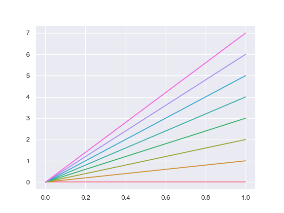

seaborn.color_palette¶
-
seaborn.color_palette(palette=None, n_colors=None, desat=None)¶ Return a list of colors defining a color palette.
- Available seaborn palette names:
deep, muted, bright, pastel, dark, colorblind
- Other options:
name of matplotlib cmap, ‘ch:<cubehelix arguments>’, ‘hls’, ‘husl’, or a list of colors in any format matplotlib accepts
Calling this function with
palette=Nonewill return the current matplotlib color cycle.Matplotlib palettes can be specified as reversed palettes by appending “_r” to the name or as “dark” palettes by appending “_d” to the name. (These options are mutually exclusive, but the resulting list of colors can also be reversed).
This function can also be used in a
withstatement to temporarily set the color cycle for a plot or set of plots.See the tutorial for more information.
- Parameters
- palette: None, string, or sequence, optional
Name of palette or None to return current palette. If a sequence, input colors are used but possibly cycled and desaturated.
- n_colorsint, optional
Number of colors in the palette. If
None, the default will depend on howpaletteis specified. Named palettes default to 6 colors, but grabbing the current palette or passing in a list of colors will not change the number of colors unless this is specified. Asking for more colors than exist in the palette will cause it to cycle.- desatfloat, optional
Proportion to desaturate each color by.
- Returns
- palettelist of RGB tuples.
Color palette. Behaves like a list, but can be used as a context manager and possesses an
as_hexmethod to convert to hex color codes.
See also
set_paletteSet the default color cycle for all plots.
set_color_codesReassign color codes like
"b","g", etc. to colors from one of the seaborn palettes.
Examples
Calling with no arguments returns all colors from the current default color cycle:
>>> import seaborn as sns; sns.set() >>> sns.palplot(sns.color_palette())
Show one of the other “seaborn palettes”, which have the same basic order of hues as the default matplotlib color cycle but more attractive colors. Calling with the name of a palette will return 6 colors by default:
>>> sns.palplot(sns.color_palette("muted"))

Use discrete values from one of the built-in matplotlib colormaps:
>>> sns.palplot(sns.color_palette("RdBu", n_colors=7))

Make a customized cubehelix color palette:
>>> sns.palplot(sns.color_palette("ch:2.5,-.2,dark=.3"))

Use a categorical matplotlib palette and add some desaturation:
>>> sns.palplot(sns.color_palette("Set1", n_colors=8, desat=.5))
Make a “dark” matplotlib sequential palette variant. (This can be good when coloring multiple lines or points that correspond to an ordered variable, where you don’t want the lightest lines to be invisible):
>>> sns.palplot(sns.color_palette("Blues_d"))

Use as a context manager:
>>> import numpy as np, matplotlib.pyplot as plt >>> with sns.color_palette("husl", 8): ... _ = plt.plot(np.c_[np.zeros(8), np.arange(8)].T)
